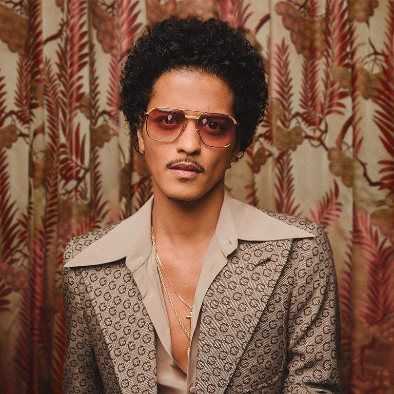
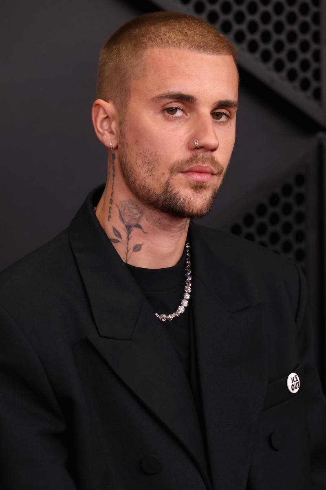
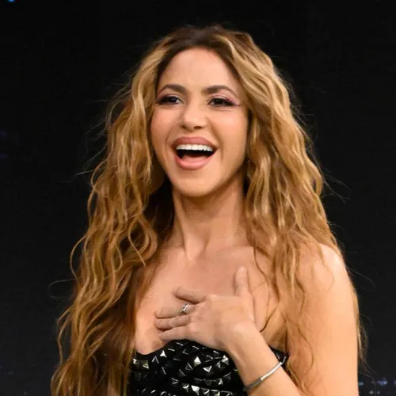

Ranking:
1: Bruno Mars con 132 millones de oyentes mensuales

2: Justin Bieber con 122 milloens de oyentes mensuales

3: The Weeknd con 116 millones de oyentes mensuales

4: Rihanna con 114 millones de oyentes mensuales

5: Shakira con 106 millones de oyentes mensuales
